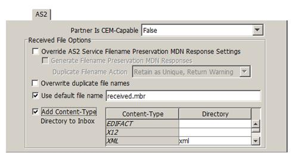
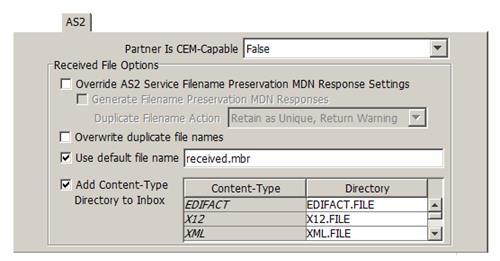
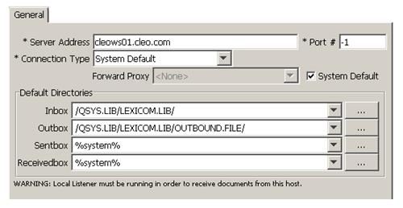
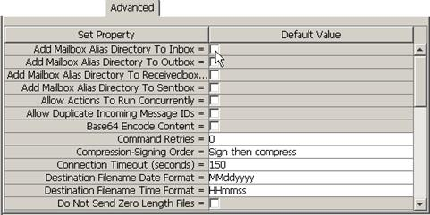

| AS/400 Configure and Test / Configuring for AS/400 Native or Integrated File System Access | |
The Add Content-Type Directory to Inbox checkbox allows for sorting of incoming messages based on the content-type of the message to a subdirectory (under the Inbox specified on the General tab for the Host). You specify each of the content-types that you want directed to specified subdirectories by entering a name in the Directory field. Directory entries may be made for content-types of: EDIFACT, X12, XML, Binary, Plain Text, and Other (a default catch-all for messages with all other content-types you may receive.) The same subdirectory may be used for multiple content-types. You may also leave 'Directory' entries blank that will cause any received messages of that 'Content-Type' to be stored in the Inbox specified on the General tab.

By default, the Content-Type directories are preconfigured for windows or IFS based folders. To use this feature on the AS/400 Native File System, you must modify all directories to be used so that the settings have the correct AS/400 syntax. That is, each directory must be specified in the form, DIRECTORY.FILE.

On the General tab, specify just the library for the Inbox value where the Content-Type files will be created. For example, /QSYS.LIB/LEXICOM.LIB/:

Now verify that all the "directories" that you have specified, i.e., files in the form DIRECTORY.FILE, have a matching physical file. In the example above, the files EDIFACT.FILE, X12.FILE and XML.FILE under the /QSYS.LIB/LEXICOM.LIB library are being used. If these files don't already exist, create a physical file for each of the files you have specified as follows:
CRTPF FILE(LEXICOM/EDIFACT) RCDLEN(132) MAXMBRS(*NOMAX) SIZE(*NOMAX)
CRTPF FILE(LEXICOM/X12) RCDLEN(132) MAXMBRS(*NOMAX) SIZE(*NOMAX)
CRTPF FILE(LEXICOM/XML) RCDLEN(132) MAXMBRS(*NOMAX) SIZE(*NOMAX)
As a final step, verify that the Add Mailbox Alias Directory To Inbox setting on the Advanced panel is not selected:

Since the LexiCom AS/400 server does not have a UI to allow the user to manually send and receive files from trading partners, and typical AS/400 users will be integrating LexiCom with an EDI translator, the LexiCom Scheduler is a convenient way to invoke the <send> and <receive> actions that you have configured for your hosts.
See Scheduling actions for more information.